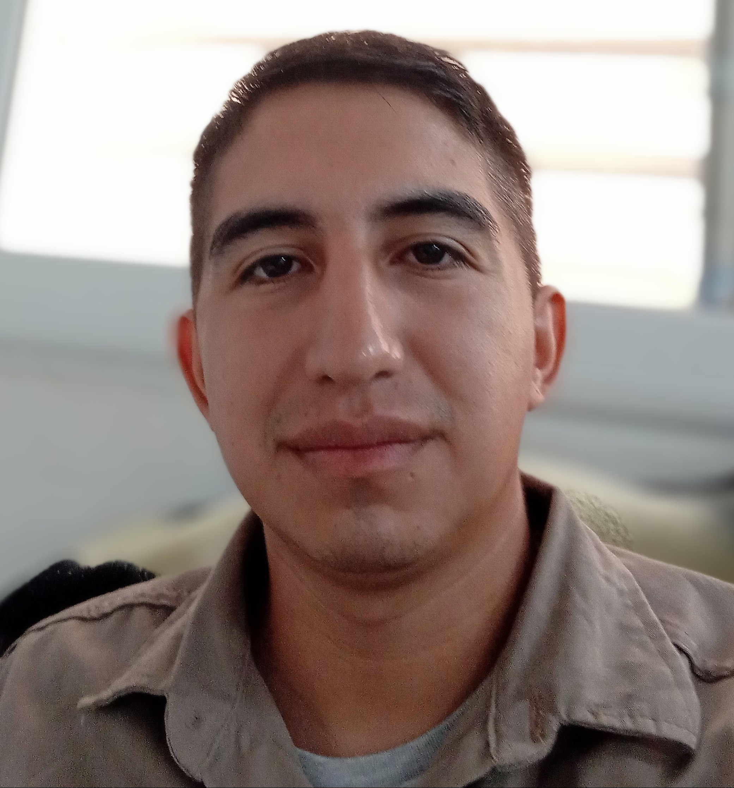

Carlos Saúl Nahuel Lovey

Datos:
- Lugar y Fecha De Nacimiento: Resistencia-Chaco 19/07/1993
- Edad: 29
- Estado Civil: Casado
- Dirección: Av. Pantaleón Gomez 1935,Barrio "Santa Rosa", Formosa
- Telefono: (370) 4988894
- E-Mail: Carlosnahuellovey@gmail.com; Alternativo: Carlitossaul.h@gmail.com
Academico:
- Bachiller C.E.P. 7, Machagai - Chaco
- Curso de acompañamiento terapéutico “Centro Psicosocial Argentino”
- Idiomas: Portugues: fluido para hablar,leer y escribir. Inglés: básico.
- Bachiller en Teologia, Seminario Teologico Nazareno, Pilar- Buenos Aires
Experiencias Laborales:
- Cento Canino “El Faro”; Mantenimiento, Limpieza. (07/2010 - 11/12)
- Metalurgica Lumtec S.A. - Operario, produccion de ventiladores (12/12 - 01/2014)
- Seminario Teologico Nazareno - Mantenimiento, Limpieza, Ayudante de Cocina, Portero (3/14 - 12/16);
- Avedis, Productora de Gases - Portero, Mantenimiento (09-2020 - Actualidad)
Skills
- Sentido de la responsabilidad
- Capacidad de trabajar en equipo
- Conocimiento y respeto de las normas
- Capacidad de actualizar los conocimientos
- Sentido de las relaciones con los clientes
- Iniciativa
- Creatividad
- Gestión del estrés y presión
- Capacidad de análisis
Hobbies
- Actualizarme: leer libros, diarios.
- Escuchar musica
- Jugar futbol
Estoy estudiando programacón porque quiero aprender a programar, y vivir de la programacion como profesión.